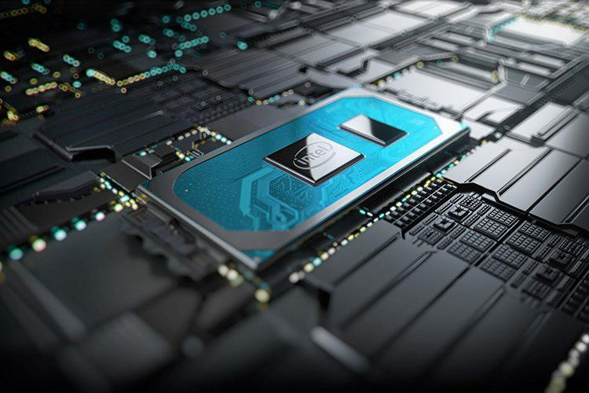
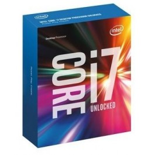
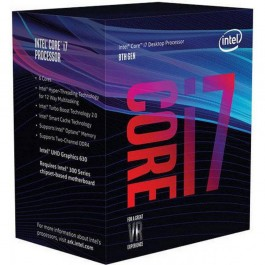
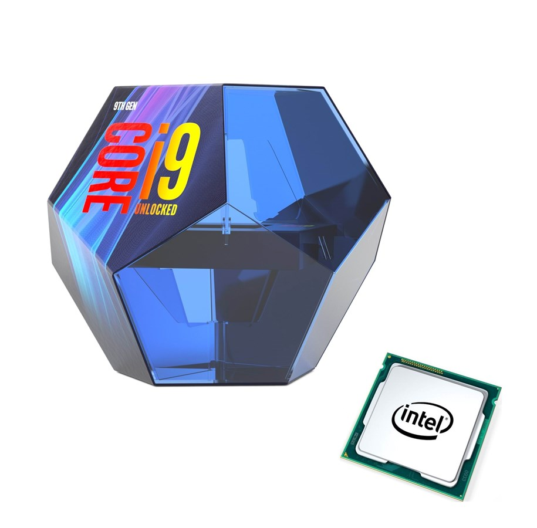

Про intel
Корпорація Intel (відома як Intel і стилізована під Intel) - американська багатонаціональна корпорація і технологічна компанія зі штаб-квартирою в Санта-Кларі, Каліфорнія, в Силіконовій долині. Це другий за величиною і другий у світі виробник напівпровідникових чіпів на основі доходу після того, як його обігнав Samsung Electronics, і є винахідником серії x86 мікропроцесорів, процесорів яких можна знайти в більшості персональних комп'ютерів (ПК). Intel зайняла 46-е місце у списку найбільших корпорацій США за підсумками 2018 року Fortune 500 за загальним доходом
Intel постачає процесори для виробників комп'ютерних систем, таких як Apple, Lenovo, HP і Dell. Intel також виробляє чіпсети материнських плат, контролери мережевого інтерфейсу та інтегральні схеми, флеш-пам'ять, графічні чіпи, вбудовані процесори та інші пристрої, пов'язані з комунікаціями та обчислювальними пристроями.
Корпорація Intel була заснована 18 липня 1968 р. Піонерами напівпровідників Робертом Нойсом і Гордоном Муром і широко асоціюється з виконавчим керівництвом і баченням Ендрю Гров. Назва компанії була задумана як портменте слова інтегрованої та електроніки, з співзасновником Нойце, який був ключовим винахідником інтегральної схеми (мікрочіпа). Той факт, що "intel" - це термін для розвідувальної інформації, також зробив назву відповідним. Intel була раннім розробником мікросхем пам'яті SRAM і DRAM, що представляла більшу частину свого бізнесу до 1981 року. Хоча Intel створила перший у світі комерційний мікропроцесорний чіп у 1971 році, це не було до успіху персонального комп'ютера (ПК). його основний бізнес
Протягом 1990-х років Intel інвестувала значні кошти в нові мікропроцесорні конструкції, що сприяло швидкому зростанню комп'ютерної індустрії. За цей час Intel стала домінуючим постачальником мікропроцесорів для ПК і була відома агресивною та антиконкурентною тактикою в захисті своїх ринкових позицій, особливо від Advanced Micro Devices (AMD), а також боротьбою з Microsoft за контроль над напрямком індустрії ПК.
Новини
Intel планує запровадити нові норми виробництва процесорів найближчим часом
Перехід на 9-нм техпроцес. Генеральний директор Intel також запевнив, що перехід на наступний технологічний процес не затягнеться ще на п'ять років. Чіпмейкер має намір освоїти 9-нм літографію вже через два роки, наростивши щільність розміщення транзисторів в два рази відносно 10-нм технології.
Які продукти виготовлятимуться за новими норимами? За 10-нм нормам будуть випускатися як CPU, так і графічні процесори Xe. Що стосується 11-нм чіпів, то їх присутність на ринку, судячи з усього, буде дуже недовгою.
Компанія Intel представила свій надпотужний процесор Core i9-9900K. Демонстрація відбулася перед виставкою Computex 2019 Тайбеї в Тайвані. Про це пише Toms Hardware.
Продукція
Сімейство процесора Intel Core i7
Модель 6700k
Тип роз'єму Socket 1151
Покоління процесора (шосте)
Кількість ядер 4
Інтегрована графіка Intel HD Graphics 530
Внутрішня тактова частота 4000 МГц
Об'єм кеш пам'яті 3 рівня 8 МБ

Сімейство процесора Intel Core i7
Модель 8700k
Тип роз'єму Socket 1151
Покоління процесора Intel Coffee Lake (восьмий)
Кількість ядер 6
Інтегрована графіка Intel HD Graphics 630
Внутрішня тактова частота 3700 МГц
Об'єм кеш пам'яті 12 МБ

Сімейство процесора Intel Core i7
Модель 9900k
Тип роз'єму Socket 1151
Покоління процесора Intel Coffee Lake (дев'ятий)
Кількість ядер 8
Інтегрована графіка Intel HD Graphics 630
Внутрішня тактова частота 3600 МГц
Об'єм кеш пам'яті 16 МБ